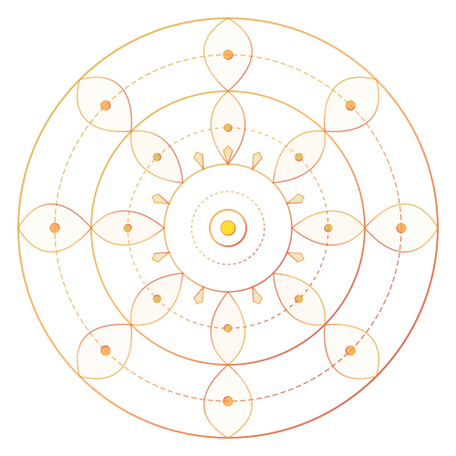

Authentic Vedic Puja &
Astrology Services
in Norway
Preserving sacred Sanatan Dharma traditions in Scandinavia. Certified Vedic Karmkand Priest Pandit Dinesh Shastri offers traditional 16 Sanskar, Satyanarayan Katha, Grih Pravesh, and precise Janam Kundali matching across Oslo, Bergen, Stavanger, and all Norway.
Pandit Dinesh Shastri
Vedic Karmkand Acharya & Jyotish Scholar
Vedic Religious Services in Norway
Traditional rituals performed with authentic Sanskrit mantras, sacred fire (Havan), and meticulous observance of Vedic Shastras.
Karmkand - 16 Sanskar षोडश संस्कार (गर्भाधान से अंत्येष्टि)
Complete ceremonial observance of the sixteen sacred milestones of human life, from Namakarana, Annaprashana, Mundan, Janeu to Vedic Vivaha and Antyeshti.
- ✦ Namakarana (Naming ceremony)
- ✦ Annaprashana & Mundan (Chudakarana)
- ✦ Janeu / Upanayana (Sacred thread)
- ✦ Vedic Vivaha (Wedding) & Antyeshti
Katha & Anushthan सत्यनारायण कथा एवं अनुष्ठान
Devotional sacred recitations invoking blessings of Lord Vishnu, Shiva, and Hanuman for peace, health, prosperity, and family harmony in your home.
- ✦ Shri Satyanarayan Bhagwan Katha
- ✦ Sundarkand & Hanuman Chalisa Path
- ✦ Shiv Rudrabhishek & Mahamrityunjaya
- ✦ Navratri Durga Saptashati Anushthan
Grih Pravesh & Vastu गृह प्रवेश एवं वास्तु शांति पूजा
Auspicious sanctification ritual for newly bought or rented homes in Norway. Purify your living space with Navagraha Havan and Vastu Dosh Nivaran.
- ✦ Vastu Shanti & Kalash Sthapana
- ✦ Navagraha Havan & Shanti Yajna
- ✦ Shubh Muhurat calculation in Norway
- ✦ Office / Business Inauguration
Vedic Astrology & Kundali वैदिक ज्योतिष एवं कुण्डली मिलान
Comprehensive horoscope analysis, 36 Gun Milan for marriage, Nordic timezone birth chart preparation, Dasha remedies, and career/life guidance.
- ✦ Janam Kundali Making (D1 & D9 Navamsha)
- ✦ Kundali Matching (Gun Milan & Manglik)
- ✦ Sade Sati & Kaal Sarp Dosh remedies
- ✦ Personalized gemstone & mantra guidance
The 16 Vedic Sanskars (षोडश संस्कार)
In Vedic Sanatan philosophy, life is refined and purified through sixteen sacred rites connecting human consciousness with universal cosmic energy.
Shri Satyanarayan Katha & Sacred Path in Norway
Invoking divine peace, resolution of hurdles, and auspicious spiritual radiance in your household.
Shri Satyanarayan Bhagwan Katha
Performed traditionally on Purnima (Full Moon), Ekadashi, or auspicious family occasions (housewarming, birthdays, anniversaries, job promotions).
- ✓ Complete Ganesh-Gauri, Varun Kalash & Navagraha Pujan
- ✓ 5 Divine Adhyayas (Chapters) recited with Sanskrit Stotras
- ✓ Detailed explanation of the moral significance in Hindi & English
- ✓ Panchamrit, Panjiri Prasad sanctification & Maha Aarti
Sundarkand & Hanuman Chalisa Path
The supreme recitation from Ramcharitmanas to dispel fear, negative planetary impacts of Rahu/Saturn, health issues, and instill immense courage and willpower.
- ✓ Chaupai-by-Chaupai musical chanting with heartfelt Bhakti
- ✓ Hanuman Ji Dhwaja Pujan & Sankatmochan Hanumanashtak
- ✓ 108 Hanuman Chalisa samput path for special vows (Sankalp)
- ✓ Bajrang Baan & Ram Raksha Stotra Raksha-Kavach
Rudrabhishek & Mahamrityunjaya
Sacred bathing of the Shiva Linga with Panchamrit, sugarcane juice, and holy water accompanied by Shukla Yajurvedic Rudrashtadhyayi mantras.
- ✓ Namakam & Chamakam Vedic recitations
- ✓ Protection against chronic illnesses, untimely fears & negative energies
- ✓ Somvar (Mondays), Pradosh, and Shravan month special Abhishek
- ✓ Bilva Patra and sacred Bhasma Arpan
Grih Pravesh & Vastu Shanti in Norway
Sanctifying your Scandinavian home with traditional Vedic purity, Vastu directional blessings, and safe indoor havan rituals.
Blessing Your New Norwegian Home
Moving into a new house or apartment in Oslo, Bergen, Stavanger, or anywhere in Norway is a landmark blessing. Pandit Dinesh Shastri conducts the complete Grih Pravesh according to the ancient texts (Matsya Purana & Brihat Samhita):
- 🏺 Dwar Puja & Toran Bandhan: Sanctifying the main entrance.
- 🥛 Surya & Gau Pujan / Milk Boiling Ritual: Symbol of continuous overflow of abundance.
- 🔥 Smoke-Safe Havan Kund: Specialized indoor Nordic havan kund with natural herbs, safe for Norwegian ventilation & fire alarms.
- 🧭 Vastu Purusha & Navagraha Sthapana: Rectifying directional disharmonies.
Preparation Checklist for Families in Norway
Pandit Ji guides you every step of the way:
Vedic Janam Kundali & Gun Milan
Understanding the planetary alignments at your exact moment of birth to navigate life, career, relationships, and spiritual evolution.
Ashtakoot 36 Guna Milan
Precision Astrological Analysis
Using traditional Parashari and Jaimini Vedic astrology principles, Pandit Dinesh Shastri provides mathematically calculated birth charts adjusted accurately for Norwegian latitudes, longitudes, and daylight saving time (DST).
-
Complete Kundali Milan: Rigorous 36 Guna Ashtakoot matching, Nadi Dosha, Bhakoot, and Manglik Dosha evaluation for a blessed marriage.
-
Janam Patrika Preparation: In-depth calculation of Lagna, Rashi, Navamsha, Nakshatras, and Vimshottari Mahadasha/Antardasha.
-
Shubh Muhurat in Norway: Calculation of auspicious times for Griha Pravesh, Vivaha, Namkaran, and business opening based on local Nordic sunrise/sunset.
-
Effective Vedic Remedies: Authentic sattvic remedies including specific Stotram recitations, Yajna, Dana (charity), and astrological guidance.
Meet Pandit Dinesh Shastri
A respected Vedic scholar bridging sacred ancient wisdom and the spiritual needs of the Indian diaspora in Norway and Scandinavia.
Born and trained in the rigorous gurukul traditions of Vedic Karmkand and Jyotish, Pandit Dinesh Shastri brings over two decades of experience conducting sacred Vedic ceremonies, homas, and astrological consultations.
Living in Norway, Pandit Ji understands the unique requirements of families in Europe. He guides devotees patiently on arranging authentic puja samagri locally, calculates accurate Muhurats according to Scandinavian astronomical coordinates, and explains each mantra and ritual in Hindi and English so the younger generation appreciates the profound spiritual meaning behind our traditions.
Spiritual Principles & Values
-
ॐ
Pure Vedic Chanting:Chanting with proper Vedic swara and intonation that resonates positively within the house.
-
卐
Clear Explanations:Every ritual explained in Hindi & English, engaging children and youngsters with their heritage.
-
🪔
Sattvic & Transparent:No fear-mongering or commercialized astrology. Honest guidance grounded in classical texts.
Direct Telephone & WhatsApp:
📞 +47 97335299Serving Families Across Norway
Available for in-person home visits throughout Norway and online consultations worldwide via Zoom/Google Meet.
Words from Our Community
Blessed experiences shared by Indian families who invited Pandit Dinesh Shastri for their auspicious family ceremonies in Norway.
"Pandit Dinesh Shastri performed our Grih Pravesh puja in Oslo. He explained every ritual so beautifully in English to our children. The positive energy and peace brought to our home was incredible!"
Rajesh & Priya Sharma Oslo, Norway"We were worried about finding an authentic priest for our son's Namakarana and Mundan ceremony in Bergen. Pandit Ji provided the complete samagri checklist and performed the ceremony with utmost Vedic devotion."
Amit & Sneha Patel Bergen, Norway"His Kundali matching and astrological guidance for our daughter's marriage was remarkably accurate and deeply reassuring. Highly recommended to anyone seeking genuine Vedic astrology in Scandinavia."
Dr. Vikram & Sunita Verma Stavanger, NorwayFrequently Asked Questions
Everything you need to know about preparing for Vedic rituals and consultations in Norway.
Pandit Dinesh Shastri provides a detailed, organized checklist well in advance. Most common ingredients (ghee, rice, fruits, flowers, milk, honey) are easily sourced from local Norwegian supermarkets, while specialized items (havan samagri, gangajal, dhoop, sacred threads) can be obtained from Indian grocery stores in Oslo, Bergen, or Trondheim. Pandit Ji also brings essential sacred items.
Due to Norway's extreme seasonal shifts in sunrise and sunset (such as the midnight sun in summer and polar night in winter), standard Indian Panchang times cannot be applied directly. Pandit Ji calculates local LMT (Local Mean Time), Vedic Choghadiya, and planetary hours strictly adjusted for Norwegian coordinates.
Mantras are chanted in pure traditional Sanskrit according to Vedic swaras. The story, significance, and rituals are explained fluently in Hindi or English, ensuring that all family members, including children and non-Hindi speakers, actively connect with the ceremony.
Yes! Pandit Ji regularly travels for ceremonies across Norway (Bergen, Stavanger, Trondheim, Drammen, Sandnes, Kristiansand, etc.). For distant locations, travel arrangements can be discussed during booking.
Yes, online video consultations (via Zoom, WhatsApp, or Google Meet) are available worldwide for birth chart preparation, horoscope matching, question horary (Prashna), and muhurat selection.
Book an Auspicious Service
Reach out to schedule your Puja, Katha, Grih Pravesh, or Vedic Astrology consultation in Norway.
-
Direct Telephone +47 97335299
-
WhatsApp Chat +47 97335299
-
Official Email dineshshashtri82@gmail.com
-
Coverage Oslo & All Norway
Service Inquiry & Booking Form
Fill out your details below. Pandit Ji will contact you promptly to confirm dates and provide the puja vidhi guidance.